Bootstrap
Running a bootstrap analysis
There are two ways to do a bootstrap analysis.
- From quartet CFs with credibility intervals, such as if we used BUCKy. The TICR pipeline outputs a CF table with extra columns for credibility intervals. We could then read that table and get bootstrap networks like this, and tweak options as needed:
using CSV df = CSV.read("tableCF_withCI.csv") bootnet = bootsnaq(startnetwork, df, hmax=1, filename="bootstrap")
- Alternatively, we can use bootstrap gene trees: one file of bootstrap trees per gene. Here, the input is a text file that lists all the bootstrap files (one per gene). We demonstrate this option here.
The names of all our bootstrap files are listed in "BSlistfiles". (ASTRAL can use the same file to do its own bootstrap, see the wiki for more details). The function readBootstrapTrees can read this list of file names, then read each bootstrap file to get the bootstrap sample for each gene. We can use them to sample input gene trees at random, one per gene, and estimate a network from them. We ask the bootsnaq function to repeat this resampling of bootstrap gene trees several times.
bootTrees = readBootstrapTrees("BSlistfiles"); bootnet = bootsnaq(net0, bootTrees, hmax=1, nrep=10, runs=3, filename="bootsnaq", seed=4321)
The bootstrap networks are saved in the boostrap.out file, so they can be read in a new session with bootnet = readMultiTopology("bootsnap.out"). To save the bootstrap networks to a different file (perhaps after having re-rooted them with an outgroup), we could do this: writeMultiTopology(bootnet, "bootstrapNets.tre").
The example above asks for 10 bootstrap replicates, which is definitely too few, to make the example run faster. We might also increase the number of optimization runs (runs) done for each bootstrap replicate. This bootstrap was run with the default 10 runs per replicate, and 100 bootstrap replicates, and the 100 bootstrap networks come with the package:
bootnet = readMultiTopology(Pkg.dir("PhyloNetworks","examples","bootsnaq.out")); length(bootnet)
100
If we used a specified list of quartets on the original data, we should use that same list for the bootstrap analysis through the option quartetfile.
support for tree edges
Now that we have 100 bootstrap networks, we need to summarize what they have in common (highly supported features) and what they don't (areas of uncertainty).
Before summarizing these bootstrap networks on the best network, it is best to re-read this network to get a reproducible internal numbering of its nodes and edges, used later for mapping bootstrap support to edges.
net1 = readTopology(joinpath(Pkg.dir("PhyloNetworks"),"examples","net1.out"))
PhyloNetworks.HybridNetwork, Rooted Network 12 edges 12 nodes: 6 tips, 1 hybrid nodes, 5 internal tree nodes. tip labels: C, D, O, E, ... (C,D,((O,(E,#H7:::0.196):0.314):0.664,(B,(A)#H7:::0.804):10.0):10.0);
It turns out that the direction of gene flow is quite uncertain in this example (see below) with a wrong direction inferred sometimes, so we re-root our best network net1 to the base of O,E, for the figures to be less confusing later.
using PhyloPlots, RCall plot(net1, :R, showEdgeNumber=true); # edge 7 leads to O+E rootonedge!(net1, 7) # makes (O,E) outgroup clade plot(net1, :R, showNodeNumber=true);
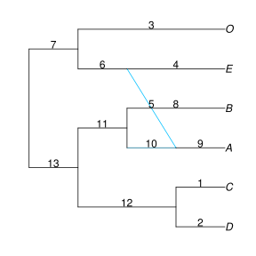 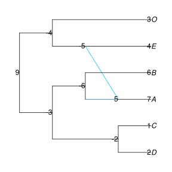
Edges cross: but rotating at node -6 should remove this crossing of edges
rotate!(net1, -6)
plot(net1, :R, showGamma=true);
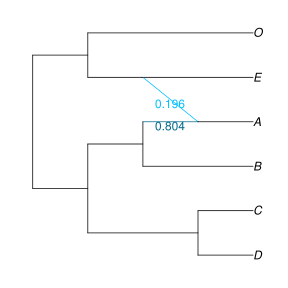
We can now summarize our bootstrap networks. The functions treeEdgesBootstrap and hybridBootstrapSupport read all bootstrap networks and map the edges / nodes onto a reference network: here net1.
BSe_tree, tree1 = treeEdgesBootstrap(bootnet,net1);
INFO: edge numbers in the data frame correspond to the current edge numbers in the network. If the network is modified, the edge numbers in the (modified) network might not correspond to those in the bootstrap table. Plot the bootstrap values onto the current network with plot(network_name, edgeLabel=bootstrap_table_name)
This calculates the major tree tree1 displayed in net1, that is, the tree obtained by following the major parent (γ>0.5) of each hybrid node. This tree can be visualized like this, with edge numbers shown for later use.
plot(tree1, :R, showEdgeNumber=true);
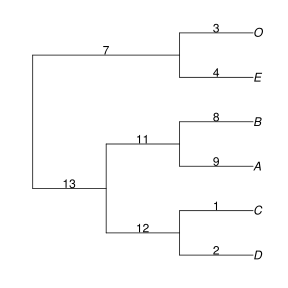
Next, we can look at bootstrap table BSe_tree, which has one row for each tree edge in net1. One column contains the edge number (same as shown in the plot) and another column contains the edge bootstrap support: the proportion of bootstrap replicates in which this edge was found in the major tree of the inferred network. We can see the full bootstrap table and see which tree edges have bootstrap support lower than 100% (none here) with
julia> showall(BSe_tree) 3×2 DataFrames.DataFrame │ Row │ edgeNumber │ proportion │ ├─────┼────────────┼────────────┤ │ 1 │ 13 │ 100.0 │ │ 2 │ 11 │ 100.0 │ │ 3 │ 12 │ 100.0 │ julia> BSe_tree[BSe_tree[:proportion] .< 100.0, :] 0×2 DataFrames.DataFrame
Finally, we can map the bootstrap proportions onto the network or its main tree by passing the bootstrap table to the edgeLabel option of plot:
plot(tree1, :R, edgeLabel=BSe_tree); plot(net1, :R, edgeLabel=BSe_tree);
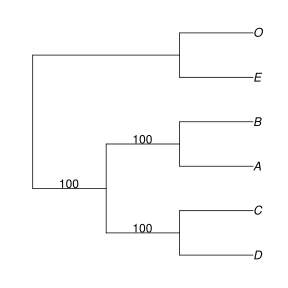 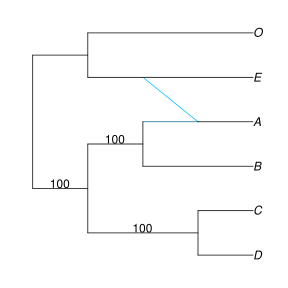
(Here, it is important that the numbers assigned to edges when building the boostrap table –those in net1 at the time– correspond to the current edge numbers in tree1 and net1. That was the purpose of reading the network from the output file of snaq! earlier, for consistency across different Julia sessions.)
If we wanted to plot only certain bootstrap values, like those below 100% (1.0), we could do this:
plot(net1, :R, edgeLabel=BSe_tree[BSe_tree[:proportion] .< 100.0, :]);
support for hybrid edges and hybrid nodes
Summarizing the placement of reticulations is not standard. The function hybridBootstrapSupport attempts to do so. The descendants of a given hybrid node form the "recipient" or "hybrid" clade, and is obtained after removing all other reticulations. If reticulation is due to gene flow or introgression, the minor hybrid edge (with γ<0.5) represents this event. The descendants of the lineage from which gene flow originated is then a second "sister" of the hybrid clade. Because of the reticulation event, the hybrid clade has 2 sister clades, not 1: the major sister (through the major hybrid edge with γ>0.5) and the minor sister (through the minor hybrid edge with γ<0.5). Note that the network says nothing about the process: its shows the relationships only. We can calculate the frequency that each clade is a hybrid clade, or a major or minor sister for some other hybrid, in the bootstrap networks:
BSn, BSe, BSc, BSgam, BSedgenum = hybridBootstrapSupport(bootnet, net1);
Let's look at the results. We can list all the clades and the percentage of bootstrap networks (bootstrap support) in which each clade is a hybrid or sister to a hybrid:
julia> BSn 7×9 DataFrames.DataFrame. Omitted printing of 3 columns │ Row │ clade │ node │ hybridnode │ edge │ BS_hybrid │ BS_sister │ ├─────┼──────────┼──────┼────────────┼──────┼───────────┼───────────┤ │ 1 │ H7 │ 7 │ 5 │ 9 │ 33.0 │ 51.0 │ │ 2 │ c_minus2 │ -2 │ -2 │ 12 │ 0.0 │ 55.0 │ │ 3 │ E │ 4 │ 4 │ 4 │ 12.0 │ 41.0 │ │ 4 │ c_minus4 │ -4 │ -4 │ 7 │ 44.0 │ 0.0 │ │ 5 │ B │ 6 │ 6 │ 8 │ 2.0 │ 33.0 │ │ 6 │ c_minus6 │ -6 │ -6 │ 11 │ 9.0 │ 7.0 │ │ 7 │ O │ 3 │ 3 │ 3 │ 0.0 │ 13.0 │
If a clade contains a single taxon, it is listed with its taxon name. The clade found in the best network is listed with its tag, starting with H (e.g. "H7"). The name of other clades start with "c_" followed by their number in the best network, if they do appear in the best network. The node numbers, as used internally in the best network, are listed in a separate column. They can be used later to display the bootstrap support values onto the network. Various columns give the bootstrap support that each clade is a hybrid, or a (major/minor) sister to a hybrid. The last column gives the bootstrap support for the full relationship in the best network: same hybrid with same two sisters. These bootstrap values are associated with nodes (or possibly, their parent edges).
To see what is the clade named "H7", for instance:
julia> BSc # this might be too big
6×8 DataFrames.DataFrame
│ Row │ taxa │ O │ E │ c_minus4 │ B │ H7 │ c_minus6 │ c_minus2 │
├─────┼──────┼───────┼───────┼──────────┼───────┼───────┼──────────┼──────────┤
│ 1 │ C │ false │ false │ false │ false │ false │ false │ true │
│ 2 │ D │ false │ false │ false │ false │ false │ false │ true │
│ 3 │ O │ true │ false │ true │ false │ false │ false │ false │
│ 4 │ E │ false │ true │ true │ false │ false │ false │ false │
│ 5 │ B │ false │ false │ false │ true │ false │ true │ false │
│ 6 │ A │ false │ false │ false │ false │ true │ true │ false │
julia> showall(BSc)
6×8 DataFrames.DataFrame
│ Row │ taxa │ O │ E │ c_minus4 │ B │ H7 │ c_minus6 │ c_minus2 │
├─────┼──────┼───────┼───────┼──────────┼───────┼───────┼──────────┼──────────┤
│ 1 │ C │ false │ false │ false │ false │ false │ false │ true │
│ 2 │ D │ false │ false │ false │ false │ false │ false │ true │
│ 3 │ O │ true │ false │ true │ false │ false │ false │ false │
│ 4 │ E │ false │ true │ true │ false │ false │ false │ false │
│ 5 │ B │ false │ false │ false │ true │ false │ true │ false │
│ 6 │ A │ false │ false │ false │ false │ true │ true │ false │
julia> BSc[:taxa][BSc[:H7]]
1-element Array{String,1}:
"A"
We can also get bootstrap values associated with edges, to describe the support that a given hybrid clade has a given sister clade.
julia> BSe 12×8 DataFrames.DataFrame. Omitted printing of 3 columns │ Row │ edge │ hybrid_clade │ hybrid │ sister_clade │ sister │ ├─────┼─────────┼──────────────┼────────┼──────────────┼────────┤ │ 1 │ 10 │ H7 │ 5 │ B │ 6 │ │ 2 │ 5 │ H7 │ 5 │ E │ 4 │ │ 3 │ missing │ c_minus4 │ -4 │ c_minus2 │ -2 │ │ 4 │ missing │ c_minus4 │ -4 │ H7 │ 7 │ │ 5 │ missing │ E │ 4 │ O │ 3 │ │ 6 │ missing │ c_minus6 │ -6 │ c_minus2 │ -2 │ │ 7 │ missing │ c_minus6 │ -6 │ E │ 4 │ │ 8 │ missing │ E │ 4 │ c_minus6 │ -6 │ │ 9 │ missing │ E │ 4 │ H7 │ 7 │ │ 10 │ missing │ B │ 6 │ H7 │ 7 │ │ 11 │ missing │ B │ 6 │ c_minus2 │ -2 │ │ 12 │ missing │ H7 │ 5 │ O │ 3 │
Here, each row describes a pair of 2 clades: one being the hybrid, the other being its sister, connected by a hybrid edge. The first rows corresponds to hybrid edges in the best network. Other rows correspond to edges seen in bootstrap networks but not in the reference network.
julia> BSedgenum
2-element Array{Int64,1}:
10
5
lists all the hybrid edges in the best network, two for each hybrid node: the major parent edge and then the minor parent edge. In our case, there is only one reticulation, so only 2 hybrid edges.
We can plot the bootstrap values of the 2 hybrid edges in the best network:
plot(net1, :R, edgeLabel=BSe[[:edge,:BS_hybrid_edge]]);
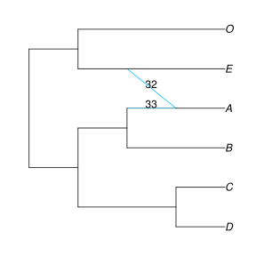
This is showing the bootstrap support each hybrid edge: percentage of bootstrap trees with an edge from the same sister clade to the same hybrid clade. Alternatively, we could show the bootstrap support for the full reticulation relationships in the network, one at each hybrid node (support for same hybrid with same sister clades). Here, we find that A received gene flow from E (and is sister to B otherwise) in just 32% of bootstrap networks. In another 1% bootstrap, A received gene flow from another source.
plot(net1, :R, nodeLabel=BSn[[:hybridnode,:BS_hybrid_samesisters]]);
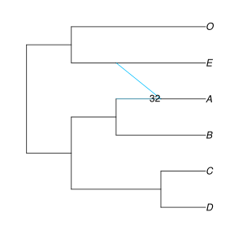
Below is example code to place tree edge support and hybrid edge support on the same plot.
tmp = BSe[!isna(BSe[:edge]),[:edge,:BS_hybrid_edge]] rename!(tmp, :BS_hybrid_edge, :proportion) rename!(tmp, :edge, :edgeNumber) tmp = vcat(BSe_tree, tmp) plot(net1, edgeLabel=tmp, nodeLabel=BSn[[:hybridnode,:BS_hybrid_samesisters]])
Who are the hybrids in bootstrap networks?
On a different plot, we can show the bootstrap support for hybrid clades, first mapped to each node with positive hybrid support, and then mapped on the parent edge of these nodes. A is estimated as a hybrid in only 33% of our bootstrap networks. In another 44%, it is the lineage to (E,O) that is estimated as being of hybrid origin.
plot(net1, :R, nodeLabel=BSn[BSn[:BS_hybrid].>0, [:hybridnode,:BS_hybrid]]); plot(net1, :R, edgeLabel=BSn[BSn[:BS_hybrid].>0, [:edge,:BS_hybrid]]);
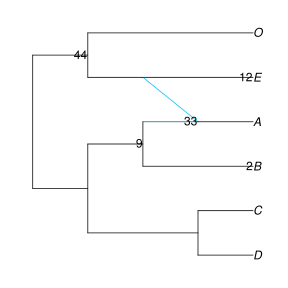 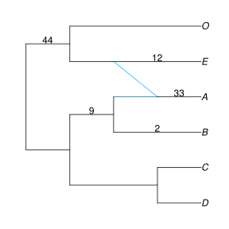
Where is the origin of gene flow?
We can plot the support for the various placements of the gene flow origin (minor sister clade), first mapped to each node with positive support for being the origin of gene flow, and then mapped along the parent edge of these nodes. We filtered clades to show those with sister support > 5%:
plot(net1, :R, nodeLabel=BSn[BSn[:BS_minor_sister].>5, [:node,:BS_minor_sister]]); plot(net1, :R, edgeLabel=BSn[BSn[:BS_minor_sister].>5, [:edge,:BS_minor_sister]]);
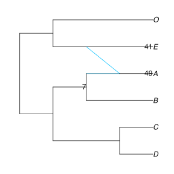 
In our best network, the lineage to E is estimated as the origin of gene flow, but this is recovered in only 41% of our bootstrap networks. In another 49%, it is the lineage to A that is estimated as the origin of gene flow: so gene flow is estimated in the opposite direction. In this example, there is support for gene flow between (A,B) and (E,O), but there is much uncertainty about its exact placement and about its direction.
Mapping the support for major sister clades might be interesting too:
plot(net1, nodeLabel=BSn[BSn[:BS_major_sister].>5, [:node,:BS_major_sister]])
The estimated heritability γ on hybrid edges in the reference network, when present in a bootstrap network, was also extracted:
julia> BSgam[1:3,:] # first 3 rows only
3×2 Array{Float64,2}:
0.767833 0.232167
0.0 0.0
0.804412 0.195588
γ=0 values are for bootstrap replicates that did not have the edge in their network. Basic summaries on γ values for a given edge, say the minor parent, could be obtained like this:
julia> minimum(BSgam[:,2]) 0.0 julia> maximum(BSgam[:,2]) 0.2321667195572249 julia> mean(BSgam[:,2]) 0.062201290198789325 julia> std(BSgam[:,2]) 0.09131993802196252